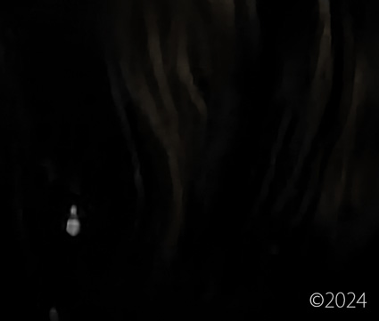
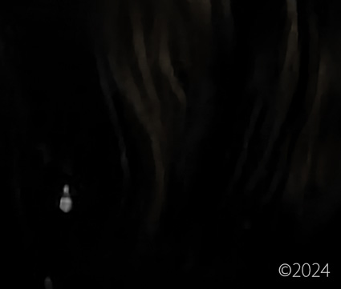
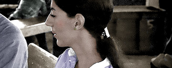
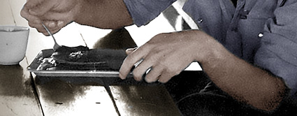
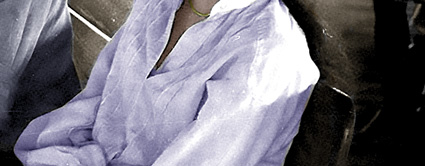
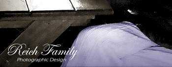
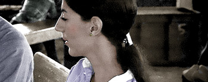
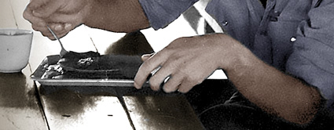
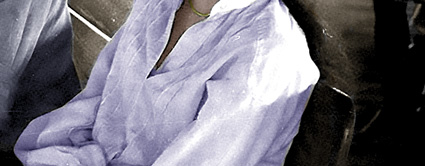
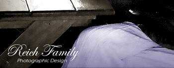

Maria Katsaris: Her Life and Death
by Reich Family Genealogical Research Project
(Reich Family) 09/05/24 - Maria Katsaris was born on June 9th, 1953 in Pittsburgh Pennsylvania to Steven Anthony Katsaris and Sophia M Papadeas Katsaris.
The Katsaris family later moved to California. Maria attended Carlmont High School in Belmont California prior to the family's move to Ukiah California.
Maria had a brother named Anthony Katsaris. She had a sister who was born before her and who died in infancy with her name - Maria. She had a sister named Elaine Constance Katsaris.
In August 1972, the Katsaris family was first introduced to a religious group in Ukiah California called Peoples Temple headed by Reverend Jim Jones. Steven Katsaris was the guest speaker at a late night meeting convened just for him. In attendance was his 19 year old daughter, Maria Katsaris. After Steven Katsaris finished his guest speaking, the family left the building while the tape continued to roll with Jones continuing to address his congregation. Jones denounced the Greek Orthodox Church and further denounced Steven Katsaris. He then expressed his interest in winning over Maria Katsaris. Steven's daughter, Maria Katsaris, joined Peoples Temple. She traveled with the group to Guyana South America where she would later play a major role in Jones' organization, especially in the final year of its existence.
Maria's father, Steven Katsaris, appealed to the media and to politicians who represented his district in California to bring his daughter home whom he felt was being held against her will by Jim Jones in Jonestown Guyana. On April 17th 1978, in a radio transmission from Jonestown to address concerned relatives in America, Maria Katsaris made strong accusations against her father. She vowed she would never leave Jonestown and return to the US.
In the Fall of 1977, Steven Katsaris submitted an affidavit classified as, Concerned Relatives, Exhibit C-1: Affidavit of Steven A. Katsaris, An Account of Some of My Experiences with Peoples Temple Church when I Attempted to Visit My Daughter in Guyana. In this affidavit, Steven Katsaris described his final meeting with his daughter, Maria, in Georgetown Guyana, in November 1977. The lead-up to the meeting was fraught with one cancellation after another. Finally, the meeting would take place at 7:15 on a Sunday morning. The following is Steven Katsaris' account of that final meeting, taken from the affidavit.
"At 7:15 Sunday morning, I was informed by a representative of Peoples Temple Church that Maria would meet with me in 45 minutes. Ambassador Mann and Mr. McCoy were at the meeting when Maria arrived with four other persons, two men - one who identified himself as an attorney representing the Church – and two women. Maria appeared agitated, could not look me in the eye, and did not return my embrace which appeared unusual and even ominous to me. She looked as if she had not slept well or had been deprived of sleep over a long period of time and her general attitude was one of suspicion, hostility and paranoia."
"She accused me of causing trouble for the Guyanese government and stated that because of my efforts Guyana had been black listed by the International Human Rights Commission. She stated further that the Church had been informed by the United States government that I was a member of a conspiracy against the Church and was associated with a right wing congressman who intended to destroy the Church. She accused me of lying to her about my health. When I pointed to Paula Adams, one of the women who accompanied her to the meeting, and asked if she knew that this woman had gone to Mr. McCoy and told him that I had abused my daughter sexually, Maria refused to discuss the subject. When I told her that I had information that she had signed an undated suicide note, she demanded to know the source of my information. I told her that was not the important issue and that she could alleviate my anxiety by simply telling me it was not true. She replied that since I would not reveal the source of my information she would not discuss that subject."
 

"In the course of the conversation with Maria I told her that before leaving for Guyana I had spoken with Grace Stoen who wanted me to convey her love and concern to her son John. Maria told me that Grace was an unfit mother and she had abused her child and that Maria was now the mother for John. She also told me in a tone that I did not believe possible from my daughter that if Grace made any attempt to get her child back she would be sorry. My daughter’s affect and the manner in which she spoke conveyed to me the tone of a serious threat."
"The entire meeting was extremely painful for me and depressing. I managed to tell my daughter that if she ever wanted to return home a ticket would be waiting for her at the Embassy. When I told her of my belief in God and that somehow things would work out, she and another woman from the Church were quick to point out to me that they do not believe in God." - Concerned Relatives, Exhibit C-1: Affidavit of Steven A. Katsaris, An Account of Some of My Experiences with People’s Temple Church when I Attempted to Visit My Daughter in Guyana.
On November 18th 1978, in Jonestown Guyana South America, Jim Jones led 913 members of Peoples Temple in the largest mass suicide in history. Congressman Leo Ryan; photographer Greg Robinson of The San Francisco Examiner; NBC cameraman Bob Brown; NBC reporter Don Harris; and Temple defector Patricia Parks - were shot to death by Jim Jones' loyal death squad on the Port Kaituma airstrip. Sharon Amos and her grown daughter Liane Harris along with Sharon's young children, Christa Amos and Martin Amos, all died at a house owned by Peoples Temple in Lamaha Gardens in Georgetown. Anthony Katsaris was badly wounded on the airstrip.
Prior to the mass suicide, Anthony Katsaris traveled to Jonestown with Congressman Leo Ryan to persuade his sister, Maria Katsaris, to return with him to California. In a photo of Maria and Anthony on the morning of the suicides in Jonestown, likely taken by San Francisco Examiner photographer, Greg Robinson, who was killed by Jones' death squad at the Port Kaituma airstrip, Anthony looks thankful and happy to just be standing next to his sister. His face speaks volumes of his adoration and love for a sister, it seems, he'd love to hold and never let go. Maria, on the other hand, has a far away look on her face of utter obstination. Aside from taking photos of the siblings, NBC News conducted a short interview with Maria and Anthony in Jonestown in November 1978.
On April 17th 1978, in a radio transmission from Jonestown to address concerned relatives in America, Maria Katsaris said that her father raped her from childhood up. She vowed she would never leave Jonestown and return to the US. This is a clip of that radio call.
Maria Katsaris was one of Jim Jones' closest assistants. She held one of the top leadership positions in the organisation. In news articles, she is disrespectfully referred to as one of Jim Jones' mistresses. Some believe Katsaris was the last to die in Jonestown - shooting Jim Jones before killing herself; however, there is no definite evidence of just who killed Jones.
Maria's leadership role was evident during the carrying out of the suicides of 909 people in Jonestown. Of the 909 suicides, 190 were children aged 12 and under. In the death tape, Maria Katsaris takes the mic and directs parents to administer cyanide poison to their children in the middle of the suicides, "You have to move and the people that are standing there in the aisle go stay in the radio room yard. So everybody get behind the table and back this way. OK? There’s nothing to worry about. Everybody keep calm and try and keep your children calm. And the older children are gonna help let the little children and reassure them. The children aren't crying from pain. It’s just a little bitter tasting but, they’re not crying out of any pain. Annie McGowan, can I please see you back..." This clip from the death tape is available at the end of this article.
In the middle of the mass suicide, Maria handed off a suitcase filled with cash to Mike Prokes, Tim Carter and his brother Mike Carter. The three men were armed with handguns and were instructed by Katsaris to deliver the cash to the Russian Embassy in Georgetown. In a 1978 interview with the Carter brothers, while still in Guyana, Mike Carter said that authorities reported to the press that there was half a million dollars in the suitcase. In that same interview, Tim Carter said they had no idea how much money was in the suitcase because they weren't informed of the amount and certainly didn't count it. In subsequent interviews, many years later, Tim Carter said the amount of money in the suitcase was a million and a half dollars. In the 1978 interview in Guyana, Tim Carter and Mike Carter said that the men had transferred the cash into a bag and left it in a chicken house. They both reported that they ran for their lives from Jonestown. They said they were picked up by Guyanese authorities hours later and taken to police headquarters where they were placed under protective custody for a time but not under arrest. The fate of the cash was never disclosed.
Maria Katsaris died on the night of November 18th 1978, in Jim Jones' cabin, by self-administered cyanide poisoning. She was 25 years old.
Maria's body was returned to the United States from Jonestown Guyana to Dover Air Force Base, Delaware. An autopsy was performed on December 15th, 1978. The autopsy stated that Maria was dressed in a green checked shirt, tan trousers with a brass belt buckle, white socks, and blue sneakers, and wearing gold colored earrings. In attendance at her autopsy were: Robert L. Thompson (Captain, MC, USM), Kenneth H. Mueller (LtCol, USAF, MC), Joseph M. Ballo (LTC, MC, USA), Douglas S. Dixon (Major, MC, USA), and Rudiger Breitenecker (MD).
Maria Katsaris was laid to rest at Potter Valley Cemetery in Potter Valley, Mendocino County, California.
To visit Maria's gravesite in Potter Valley California: from Hwy 101, take Hwy 20 towards Lake County. Drive 4 miles to the Potter Valley turnoff. Turn left onto Lake Pillsbury Drive. Go 2.4 miles to West Road. Turn left and go 2 miles to the cemetery. The parking area is on the far side of the cemetery under a huge tree.
In 2000, a cenotaph honouring the memory of Maria Katsaris was placed beside her sister, Elaine Constance Katsaris Launer in Skylawn Memorial Park cemetery in San Mateo, California.
Maria was loved, especially by her family. Her father Steven Katsaris appealed to the media and to politicians that his daughter was not in a good place and needed to be returned to her loving family. Her brother, Anthony Katsaris, surely took a bullet for his sister. He traveled thousands of miles to bring her home. Maria was a daughter, a sister, and a dear friend to many. Her life is not remembered for the sole event that took place in Jonestown Guyana on November 18th, 1978 by those who loved her. Dearest Maria, we love you, we miss you, and we honour you for always.
The Life & Death of Peoples Temple
Copyright 2024 All Rights Reserved
Maria Katsaris Cenotaph
Skylawn Memorial Park - San Mateo California
Maria Katsaris
Directed Parents to Kill Their Children
November 18th 1978
Anthony & Maria Katsaris
Jonestown NBC News Interview
November 1978
Anthony & Maria Katsaris
Their Final Breakfast
November 18th 1978
 







The Death Tape
Jonestown Suicides
November 18th 1978
Anthony & Steven Katsaris
Recuperating From Jonestown
December 1978
Research, Writing and Photographic Design by
Reich Family Genealogical Research Project
The Reich Family
Peoples Temple Resources
Alternative Considerations of Jonestown & Peoples Temple
Transmissions from Jonestown
Special thanks to the research of Barnett
Katsaris Family's First Introduction to Peoples Temple in Ukiah California
FBI Tape No. Q1021-A August 1972
Radio Calls for Concerned Relatives April 17 1978
FBI No. Q 736 Press conference on Concerned Relatives
San Francisco Examiner / UPI 1978 / Photographer: Greg Robinson
NBC News 1978 Interview with Anthony and Maria Katsaris
Cameraman: Bob Brown / Interviewer: Don Harris
ABC News 1978 Interview with Tim Carter and Mike Carter in Guyana
Jonestown - The Life - Death of Peoples Temple
Director: Stanley Nelson / Writers: Marcia Smith and Noland Walker
FBI Archive of Jonestown Recordings The Jonestown Death Tape
(FBI No. Q 042) November 18th 1978
United States Air Force Autopsy Report (A006) AFIP# 1680273
Steven Katsaris Memorial Site
Reich Family Genealogical Research Project